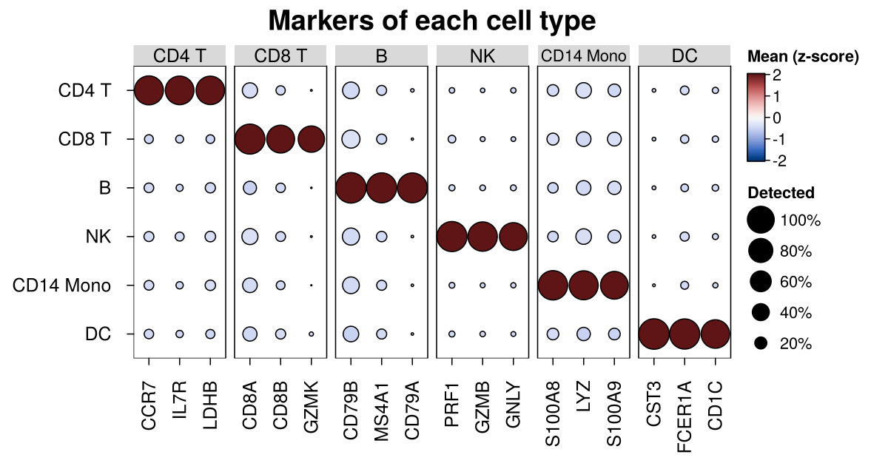
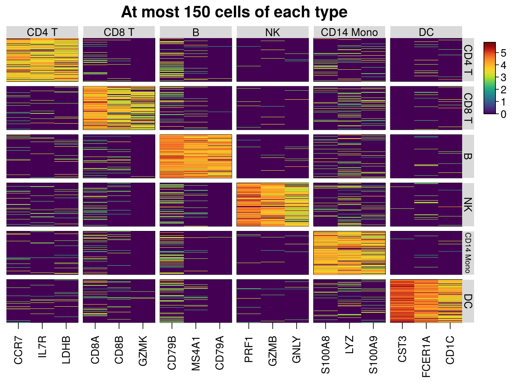
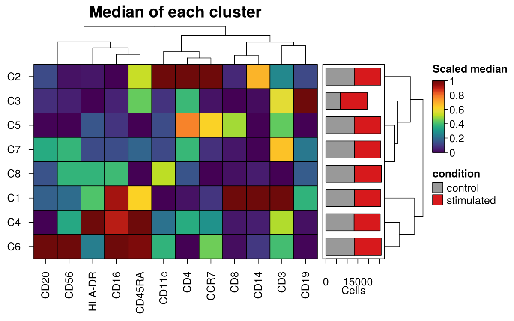
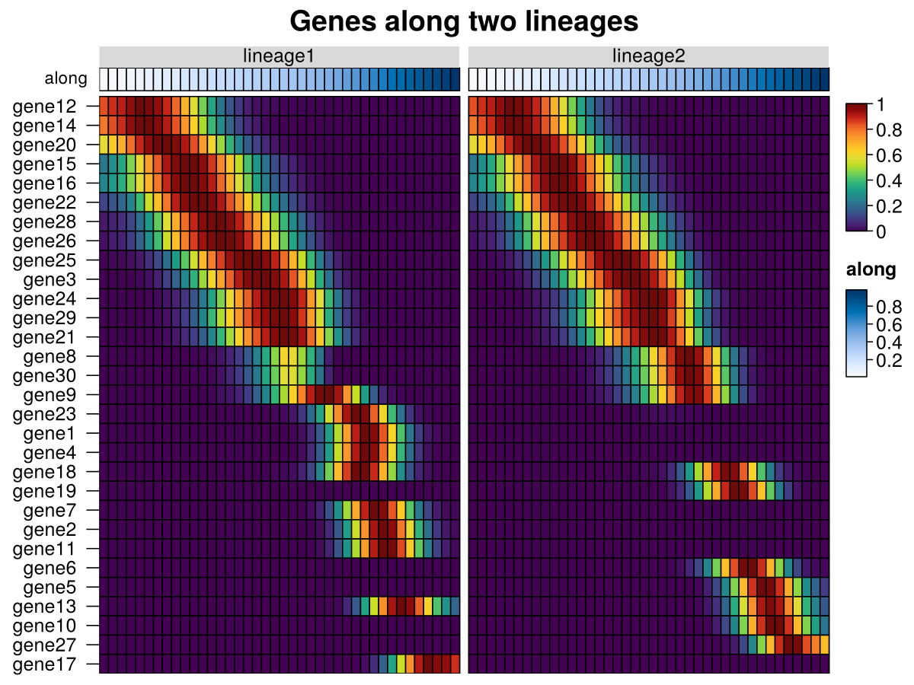

HeatmapR is a lightweight R package that makes it easy to generate high quality, complex heatmaps with minimal data preprocessing or manual customisation. Visit the HeatmapR website to get started https://dillonhammill.github.io/HeatmapR/.
Overview
As the dimensionality of datasets continues to increase there is a need for visualisation tools such as heatmaps to present data in an easily interpretable way. The construction of complex heatmaps poses a number of challenges as they are composed of multiple graphical elements, such as a coloured matrix, dendrograms, cluster sub-divisions, axes, titles and legends. The first base graphics implementation of heatmaps included heatmap() in the stats package and heatmap.2() in the gplots package. The packages attempt to solve these graphical challenges by treating each graphical component as a separate plot element and arranging them using layout(). This approach can generate complex heatmaps but it rendered users unable to arrange the heatmap with additional plot elements. HeatmapR aims to address these layout issues using solely a base graphics approach.
HeatmapR
HeatmapR has a number of benefits over other heatmap packages:
-
HeatmapR is built using base graphics to remove the need for familiarity with
ggplot2orplotly. - HeatmapR is extremely lightweight and therefore there are no external dependencies that need to be installed.
- HeatmapR is designed under rOpenSci naming guidelines for a consistent and intuitive user experience.
- Unlike other heatmap packages that use base graphics, HeatmapR actually returns the plot object instead of an image. This makes it easy to arrange multiple plots in complex layouts without sacrificing resolution, and
heat_map_info()returns the row/column order and cluster assignments for use in downstream analyses. -
HeatmapR is fully customisable and comes with a saving API (
heat_map_save()) to export high resolution images. - HeatmapR handles datasets that contain non-numeric or missing data, which means you don’t have to spend ages formatting and pre-processing the data beforehand.
-
HeatmapR clusters large datasets quickly: distances, linkage, cuts, k-means and optimal leaf ordering run in compiled C++ code shared between threads (
heat_map_threads()), and rows or columns beyondclust_maxare clustered in two stages, so 100,000 rows are clustered in under a second on two cores. A clustered heatmap of 20,000 rows takes under a second (7 seconds clustered exactly), against half a minute to two minutes and several times the memory with pheatmap,heatmap.2()or ComplexHeatmap: see the speed comparison. -
HeatmapR shows sample or feature metadata as annotation tracks (
annotation_x,annotation_y), alongside dendrograms, cluster labels and bar plots, and adapts the layout so that labels and legends don’t overlap. Dendrograms, bar plots, legends and margins are sized in inches from their contents, so they look the same whatever the shape of the data. - HeatmapR generates publication ready images with minimal manual customisation, making it ideal for users that have limited coding experience.
Features
Beyond clustering, scaling and customisable colours, shapes, sizes, text, legends and layouts, HeatmapR can:
-
Show more than one value in each cell - split cells to compare two conditions (
cell_split), the distribution of the values behind each cell (cell_values), cell size as a second variable, and colours that fade towards grey where values are uncertain (cell_uncertainty). -
Annotate rows and columns - metadata tracks (
annotation_x,annotation_y), bar graphs, box plots and violins beside the heatmap, labels for chosen rows of a large heatmap (mark_y) and a zoom lens that enlarges a band of rows beside the whole (zoom_y). -
Cluster with confidence - correlation and cosine distances, optimal leaf ordering, clustering within your own groups, k-means splits, and bootstrap support drawn on the dendrogram branches (
tree_support_y). -
Handle large data - raster images for heatmaps with millions of cells,
heat_map_summarise()for pseudobulk heatmaps and dot plots of groups of cells, and robust, stepped or centred colour scales with the distribution of the values traced over the legend. -
Explain the figure -
heat_map_info()returns the order, clusters and layout of a heatmap, andheat_map_describe()writes alternative text for screen readers. -
Work with ggplot2 -
heat_map_grob()places heatmaps besideggplot2plots inpatchworkandcowplotlayouts, andheat_map_data()returns the cells, rows, columns and dendrograms as tidy data for rebuilding or restyling them.
 Zoom lens |
 Split cells |
 Uncertainty in colour |
 Distributions inside cells |
 Branch support |
 Metadata annotations |
Single-cell data
HeatmapR reads single-cell data where it lives - SingleCellExperiment and Seurat objects, flowFrame and flowSet objects and sparse matrices, in memory or on disk (DelayedArray, HDF5Array and BPCells) - choosing features by name and grouping and annotating cells from their metadata. Only the chosen features of the cells shown are made dense, so a few markers of a million cells need little memory, and summaries, markers and scores of every gene read on-disk data a block of genes at a time.
-
Dot plots, markers and gene-set scores -
heat_map_dot()draws the mean of each group as colour and the proportion of its cells detected as size (or two conditions in the halves of each dot),heat_map_markers()ranks the markers of each group by their AUC, with Wilcoxon p-values, ready to pass tofeaturesor to draw as a dot plot, andheat_map_score()scores each cell for sets of genes (z-scored means or module scores). -
Aligned heatmaps -
heat_map_align()lines up data sets measured on the same cells or groups, such as genes and surface proteins, as blocks of one heatmap, each scaled and coloured on its own with its own legend, with the rows clustered on one of them. -
Summaries of groups -
heat_map_summarise()finds the mean, median, sum or proportion detected of each feature in each group of cells from sparse data in compiled code, andgroup_maxkeeps small groups visible next to large ones. - Cytometry - the asinh transform and quantile scaling of markers, the medians of clusters in each sample, and stacked bars of the events of each condition in each cluster.
-
Trajectories -
heat_map_smooth()smooths genes along pseudotime, one lineage at a time, andtree_order_y = "peak"orders them by when they peak.
heat_map_example() simulates blood cells, cytometry events and a branching trajectory to try them on:
cells <- heat_map_example("rna")
markers <- heat_map_markers(cells, group_by = "cell_type", n = 3)
heat_map_dot(cells, features = markers, group_by = "cell_type")|
 Dot plots |
 Markers of each group |
|
 Cytometry clusters |
 Trajectories |
The guides on the website cover ordering, large heatmaps, single-cell data, cells, and working with other packages, and the changelog lists everything new in HeatmapR 2.0.0.
Installation
HeatmapR can be installed from CRAN:
install.packages("HeatmapR")The development version can be installed directly from GitHub:
devtools::install_github("DillonHammill/HeatmapR")HeatmapR contains C++ code: CRAN provides ready-built binaries for Windows and macOS, but installing from GitHub (or from source) needs a compiler - Rtools on Windows or the Xcode command line tools on macOS.
Usage
Creating heatmaps is as easy as loading HeatmapR and supplying your dataset to the heat_map() function. For details on customising your heatmaps, refer to the package vignette.
library(HeatmapR)
heat_map(
mtcars,
scale = "column",
scale_method = "range",
tree_x = TRUE,
tree_y = TRUE,
tree_cut_x = 4,
tree_cut_y = 12,
cell_size = TRUE,
cell_shape = "circle",
title = "mtcars"
)
Acknowledgements
HeatmapR computes distances and hierarchical clustering in compiled code that follows the methods of the stats package (stats::dist() and stats::hclust()), which it still uses for the methods the compiled code doesn’t cover. Dendrograms are drawn by HeatmapR’s own code. Versions up to 1.1.0 drew them with modified functions of the ggdendro package, which were removed in 2.0.0.
Code of Conduct
Please note that the HeatmapR project is released with a Contributor Code of Conduct. By contributing to this project, you agree to abide by its terms.
Citation
If you use HeatmapR for your work please cite the package as follows:
citation("HeatmapR")
#> To cite package 'HeatmapR' in publications use:
#>
#> Hammill D (2026). _HeatmapR: Create Heatmaps Using Base Graphics_. R
#> package version 2.0.0, <https://dillonhammill.github.io/HeatmapR/>.
#>
#> A BibTeX entry for LaTeX users is
#>
#> @Manual{,
#> title = {HeatmapR: Create Heatmaps Using Base Graphics},
#> author = {Dillon Hammill},
#> year = {2026},
#> note = {R package version 2.0.0},
#> url = {https://dillonhammill.github.io/HeatmapR/},
#> }